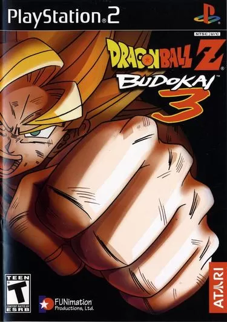

Dragon Ball Z - Budokai 3
"Dragon Ball Z: Budokai 3" é um jogo de luta lançado em 2004 para PlayStation 2, desenvolvido pela Dimps. Destaca-se pela sua lista diversificada de personagens de Dragon Ball Z e GT, modos de jogo como "Dragon Universe" e "Duel", e gráficos cel-shaded que imitam o anime. Com um sistema de combate rápido e estratégico, o jogo permite transformações e ataques especiais característicos. Amplamente elogiado pela jogabilidade e fidelidade à série, é considerado um dos melhores jogos de Dragon Ball.
